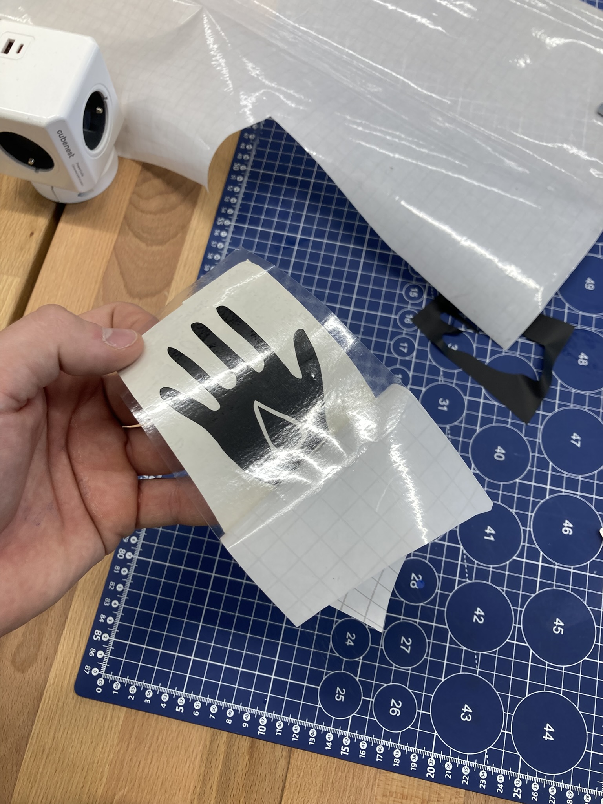

Laserové řezání kartonu byl poměrně zábavný projekt. Jeho klíčovou částí bylo udělat skicu, kterou jsme později vyřezávali. Na výběr bylo z mnoha programů, jako je AutoCAD, Inventor nebo i třeba Inkscape. Já jsem si pro svůj projekt zvolil Inventor, kde jsem to dělal jako skicu ve výkresu součásti. Volba projektu byla jasná, nechtěl jsem nějaký designový nesmysl, chtěl jsem věc, kterou reálně použiji, a tak jsem si ke svému hobby, míchání drinků, udělal stojan na lahve. Použil jsem sice více kartonu, ale stojí to za to.
- Pevná konstrukce
- Ozdobná záda
- Praktické využití
Technologie: Laserová řezačka BRM, Interlocking edges pro spojení

Na další fotce je detail na interlocking edges systém, který je nejčastěji používán u dětských pěnových destiček nebo na podložkách v posilovně.

Poslední fotkou o laseru bych chtěl ukázat návrh zad. Ty by mohli lépe držet, možná by byl vhodnější stejný systém jako na minulé fotce, ale je to spíše ozdobný prvek, který stejně bude většinu času u zdi. Zde byla trochu sranda navrhnout ornament bez ostrých úhlů, abych se vyhnul riziku požáru na laseru. V původním designu byla tečná hrana na kružnici, ale vyřezávání tohoto “nekonečně“ ostrého rohu by téměř určitě vedlo k požáru, nebo aspoň částečnému ohoření kartonu.
Chtěl bych ještě zmínit, že v této části semestru chvilku ve třídě panovalo, zda vyřezávání nálepek není součástí tohoto projektu a i když už víme, že není, přijde mi škoda sem nedat můj výtvor. Na následující fotce je ukázka mé nálepky, kterou jsem nakreslil rukou, naskenoval a přenesl do Inkscape. Tam dále převedl na vektorovou grafiku a vyretušoval chyby jako jsou díry v obrázku nebo špatný tvar bézierových křivek. Produkt jsem pak vyřezal na vinylovém řezacím plotteru VICUT RC720 a jelikož je nálepka z více dílů, tak jsem ji celou přelepil další vrstvou, aby se celá dala nanést jako jeden celek. 